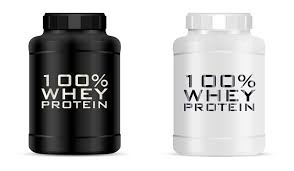

SUPLEMENTACIÓN
PROTE�NA
hola
Descripción
Las proteÃnas o prótidos son macromoléculas formadas por cadenas lineales de aminoácidos. Las proteÃnas están formadas por aminoácidos y esta secuencia está determinada por la secuencia de nucleótidos de su gen correspondiente. La información genética determina qué proteÃnas tiene una célula, un tejido y un organismo. Leer mas...
CREATINA

hola
Descripción
La creatina es un ácido orgánico nitrogenado que se encuentra en los músculos y células nerviosas de algunos organismos vivos. Es un derivado de los aminoácidos muy parecido a ellos en cuanto a su estructura molecular. Se sintetiza de forma natural en el hÃgado, el páncreas y en los riñones a partir de aminoácidos como la arginina, la glicina y la metionina a razón de un gramo de creatina por dÃa. Constituye un vector inmediato y directo para transportar ATP y proveer de energÃa a las miofibrillas musculares. Leer mas...